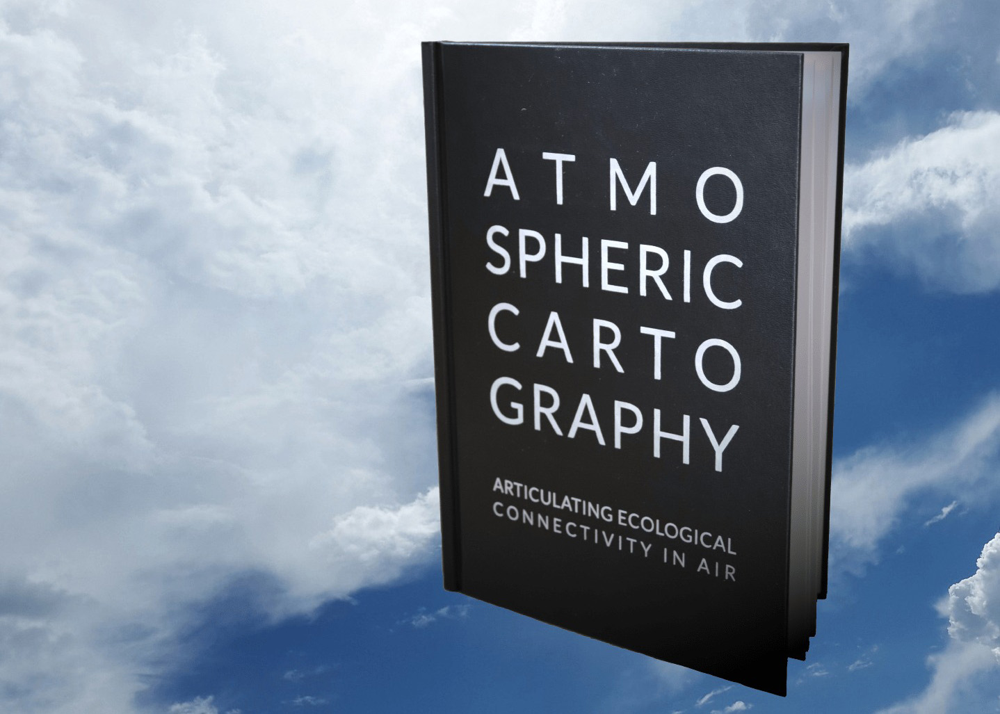

Atmospheric Cartography
Master's Project

For my Master of Research in Communication Design at the Royal College of Art (2019), I explored how air pollution and climates are represented in visual communication. Specifically, I focused on the problematic of how to map atmospheric phenomena. The objective was to go beyond land-based logic in cartography, to explore the transient and immersive nature of atmosphere in spatial design practices. My empirical research involved expert interviews, participatory workshops with design students, and installation design.
I held semi-structured interviews with four practitioners who, in various ways, are involved in mapping air and atmospheres, but have varying backgrounds in atmospheric chemistry, citizen science, graphic design, and lighting/set design. This variety of techniques then informed participatory workshops held at Brighton University and the Royal College of Art, during which design students prototyped local and embodied approaches to atmospheric cartography. The thesis was shared as part of an interactive installation at the RCA Graduate Show of 2019.
Atmosphere physically arises from air but can also denote a mood. Atmosphere brings together meteorological and emotional forces, but this combination alone does not define it. Atmosphere is immersive yet elusive, palpable yet transcendent. Fluctuating with space and time, it is a marker of both. Maps of atmosphere trace these fluctuations and translate them into contours. Unlike geopolitical borders on land maps, these coordinates emerge temporally as they are sensed by machines and more-than-human bodies.